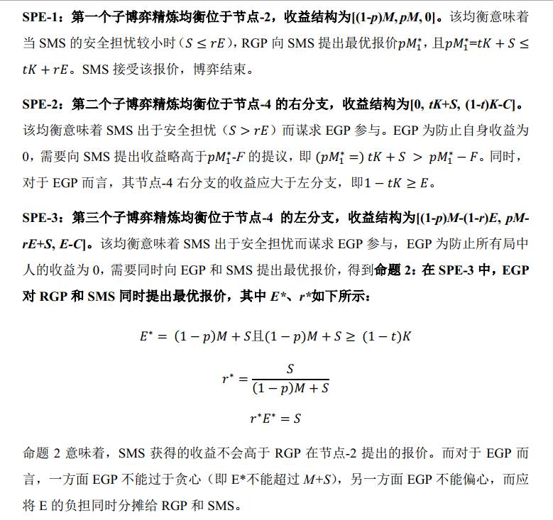

收录于合集

作品简介 ****
作者： 唐世平，教育部长江学者特聘教授，复旦大学国际关系与公共事务学院陈树渠讲席教授，是当今最有国际影响的中国社会科学家之一，也是当今亚洲最优秀的社会科学家之一，“掌中星球”创始人兼CEO。唐世平教授的研究领域广泛，主要分成五个大的领域：国际政治、比较政治、制度经济学、政治（学）理论、社会科学哲学。他在这些领域都做出了世界水平的研究，并且有广泛的著述。
编译： 常佳艺（国政学人编译员，北京大学国际关系学院）
来源： Shiping Tang, Regionalism in the Shadow of Extraregional Great Powers: A Game Theoretical Explanation of Central Asia and Beyond, The Chinese Journal of International Politics , Volume 14, Issue 3, Autumn 2021, Pages 381–416, https://doi.org/10.1093/cjip/poab007
唐世平
文章导读
编者按： 上海合作组织自2001年成立至今已过了20个年头。2021年9月17日，习近平在上海合作组织成员国元首理事会第二十一次会议上发表重要讲话，提出构建更加紧密的上海合作组织命运共同体。值此20周年之际，本文解释了上海合作组织为何能够在中亚的区域主义项目中变得如此重要且富有活力。
内容提要： 本文为各种区域主义项目的演变建立了一个博弈论模型。文章认为，二战后世界的区域主义几乎总是在域外大国（extraregional great powers, EGPs）的阴影下发展：这些区域外大国通常是美国，但可以是其它的大国（比如，中国）。因此，域内大国（regional great powers, RGPs）和域内的中小国家（small-to-medium states, SMSs）在域外大国影响下的互动机制在区域主义项目的发展过程中扮演重要作用。本文以此为基础，建立了一个博弈理论框架，并将这一模型应用于解释中亚区域主义项目的历史动态。本文尤其解释了为什么上海合作组织这个不被学者看好的区域主义项目能够脱颖而出，变得更加重要且富有活力。在中亚地区之外，本文也简要研究了其他三个地区的区域主义项目，进一步佐证了该模型的广泛适用性。
主要内容
区域主义是冷战后国际政治中最引人注目的发展之一。然而，各式各样的区域主义项目却面临着截然不同的命运，一些区域主义项目运行良好，该区域的一体化程度显著提高，而另一些项目则从一开始就摇摇欲坠，或在中途停滞不前。目前的多数研究往往集中于区域内部的逻辑，而很少关注区域外大国（EGP）所扮演的角色。本文则认为，战后的区域主义几乎总是在EGP的阴影下发展，而鲜有完全自主的案例。区域大国（RGPs）和区域内中小国家（SMSs）在EGPs的阴影下的互动方式对于区域主义项目的演化至关重要。而在众多区域主义项目中，中亚的案例非常有趣：自苏联解体以来，美国、北约、欧盟、日本、伊朗和土耳其一直在为在该地区的影响力而争斗，被学界称为“（新）大博弈”。本文提出的模型则对中亚地区这一令人困惑的区域主义项目进行了博弈论解释。
01
地区内-地区间讨价还价模型
博弈的初始假设：
**
**
本文提出的区域内- 区域间讨价还价模型基于四个简单的假设：第一，区域内各国在物质权力方面不平等，并以此可以简化为两种类型：RGPs和SMSs；第二，尽管在经济领域，RGP和SMS可以选择通过更紧密的一体化而实现互利，但在安全领域，RGPs对SMSs的安全保证不可能是完全可信的，因此EGPs至少能够为SMS提供部分安全；第三，不是每个地区都是自主的（autonomous）；第四，EGP对于不同地区的区域主义项目的兴趣程度不同。如果EGP对此感兴趣，它既可以通过SMSs的邀请加入，也可以不请自来。从上述四个假设出发，区域主义项目中RGPs、SMSs和EGPs之间的战略互动可以被看作是一个区域内- 区域间的讨价还价问题。该模型有三个局中人，而收益结构按照RGP, SMS, EGP的顺序给出。表1总结了该模型中使用的符号。
表格1 模型使用的符号系统
博弈过程与博弈树：
**
**
该博弈的过程如下所示：
图表 1 博弈树与局中人的收益
1. 节点-1 RGP与SMS在其区域主义项目上讨价还价 ，最终RGP向SMS发出“接受”或“放弃”二选一的最后通牒。
2. 节点-2 SMS决定：
2a) 拒绝RGP的提议，博弈结束，维持现状（即，收益结构为[0, 0, 0]）;
2b) 接受RGP的最终提议，博弈结束，收益结构为[(1-p)M, pM, 0];
2c) 请求EGP加入博弈，博弈继续到下一阶段
3. 节点-3 当SMS寻求帮助，EGP决定：
3a) 不参与RGP和SMS之间的区域主义项目。SMS回归RGP的原始报价，并失去一些威望或面子（表示为F），博弈在节点-4的中间分支结束；
3b) 参与RGP和SMS之间的区域主义项目。博弈进入下一阶段。在这一阶段，EGPs向RGPs或/和SMSs提出两种可能报价：
3b-i) EGP将博弈带到节点-4的左分支，要求RGP和SMS共同分担EGP的参与费用（表示为E）。作为回报，EGP付出一定成本（表示为C），向SMS提供一些额外的安全保证（表示为S）。
3b-ii) EGP将博弈带到节点-4的右分支。EGP向SMS提供一项新的协议，这项新区域间协议不包括RGP。EGP和SMS要分一个新的“蛋糕”（表示为K），SMS得到tK和一些安全保障，而EGP得到(1-t)K-C。在这个结果中，RGP得到的收益为零。
4. 节点-4 RGP和SMS决定接受或拒绝EGP的提议。
4a) 当RGP和SMS都接受EGP在节点-4左分支的提议时，博弈结束，收益结构为 [(1-p)M- (1-r)E, pM-rE+S, E-C]。
4b) 当RGP或SMS拒绝EGP在节点-4左分支的提议时，博弈结束，维持现状（即，收益结构为[0, 0, 0]）。
4c) 当SMS接受EGP在节点-4右分支的提议时，博弈结束，收益结构为 [0, tK+S, (1-t)K-C]。
4d) 当SMS拒绝EGP在节点-4右分支的提议时，SMS总是会回到节点-1接受RGP的原始报价，博弈结束，收益结构为 [(1-p)M, pM-F, 0]。
完全信息中的解决方案
**
**
通过逆向推导，显然在完全信息下，如果存在可行的EGP，SMS在永远不会拒绝RGP在节点-1的提议：SMS要么接受，要么寻求EGP的帮助。因此，节点-2的收益结构[0, 0, 0]将不会实现。此外，由于“介入”是EGP的占优策略，因此EGP总是选择介入，节点-4中间的分支同样不会实现。同时，为避免回报为0，RGP和SMS总是接受EGP在节点-4左分支的报价。另外，由于讨价还价的时间成本，在同样的收益下，局中人总是选择尽快达成协议。基于此，本文提出 命题1：在完全信息下，此博弈有三个子博弈精炼均衡（SPEs） 。
表格 2 完全信息下的收益与子博弈精炼均衡

图表 2 完全信息下的完整策略集
02
解释令人困惑的中亚区域主义 1991-2020
俄罗斯主导的中亚一体化项目的失败
**
**
尽管中亚地区是俄罗斯的传统势力范围，但在苏联解体后，由于俄罗斯逐渐无法提供足够的经济利益，且中亚国家对俄罗斯可能剥夺其独立地位的不安全感日益加深，因此中亚国家对俄罗斯的依赖不断削弱。为将中亚国家紧密联系在一起，并维持其影响力，俄罗先后建立了独联体、欧亚经济共同体与欧亚经济联盟(EAEU)。这反映了节点-2中的SPE-1的逻辑： 在任何可能的情况下，特别是当面临潜在EGP的竞争时，RGP总是希望将一个区域内的SMSs保持为一个区域内集团，使其继续依赖于RGP。
然而，与失败的独联体与欧亚经济共同体类似，由于俄罗斯的绝对主导地位，EAEU成员国之间的经济一体化进程缓慢，经济贡献甚微。更关键的是，EAEU的内部贸易多由大宗商品贸易支撑，对油气资源的价格变动十分敏感。因此，大多数中亚国家采取了两个联锁策略：一方面，他们组成内部集团，以保持一定的政治独立。另一方面，他们邀请潜在的EGP进入该地区。这和本文的模型相一致： 当RGP无法提供足够的经济效益、SMS畏惧RGP、有可以求助的EGP且后者能够带来更多收益时，SMS就会转向EGP（即把博弈从节点-2带到节点-3），逐渐减少对RGP的依赖。 因此，自独立后不久，中亚国家就一直试图在可能的EGP中寻找机会，而他们至少有两个可供选择的EGP，即美国/北约和中国。其结果是在中亚出现了所谓的“新大博弈”（new big game）。
美国主导的跨地区项目的失败 **** **** ****
**
**
然而，美国作为EGP之一，其中亚战略始终被两种相互矛盾的冲动所撕裂。 **** **** ****一方面，美国与中亚国家的利益有一致性：美国支持中亚国家的独立地位，并通过确保中亚的油气供应减少中亚对于俄罗斯的依赖；另一方面，美国在言辞和行动上致力于促进中亚地区的民主化，而这不可避免地引发了中亚国家的恐惧。此外，美国的中亚战略往往缺乏连贯性，美国对中亚国家的长期经济发展缺乏兴趣，所能提供的经济利益也远低于中国。因此，随着美国逐渐从阿富汗战争抽身，大多数中亚国家在2008年左右就已经脱离了由美国主导的轨道。
上海合作组织：创造与繁荣
**
**
为何在由俄罗斯和美国主导的地区项目趋于停滞的同时，不被外界所看好的上海合作组织却在不断发展？本文给出了以下几点理由： 第一，近年来，中亚国家可以谋求帮助的EGP只有中国。 正如上文指出，对于中亚国家而言，美国不够稳定可靠，而受益于中国自身的经济活力，上合组织拥有更大的贸易额与更强的抗风险能力。同时，中国的对外直接投资一直是上合组织成员国国际直接投资的唯一来源。因此，中国自然会取代美国成为更受欢迎的EGP。
第二，根据本文的模型，RGP通常不满于EGP的干涉。然而，俄罗斯却在一定程度上包容了中国的参与。 本文对这一包容性提出了两种解释：一方面，只要中国不谋求将俄罗斯挤出中亚，俄罗斯就能从合作中获益。另一方面，在美国霸权的阴影下，中国同样需要俄方的支持。因此，中俄双方已经达成了某种相互理解和行动模式：俄罗斯主导地区安全事务，而中国集中于经济一体化和发展事务，从而避免将俄罗斯边缘化。换言之，中国作为EGP，决定与RGP合作而非对抗。
第三，对中亚国家而言，中国的介入不仅能够带来显著的经济效益，也能够为中亚国家提供外部与内部的安全收益： 就外部而言，与一国主导的局面相比，中俄两国相互制约的格局能够为中亚国家提供更多的安全感；就内部而言，受到伊斯兰原教旨主义的威胁，中国和俄罗斯都愿意维护中亚国家的政权安全与稳定。
综上所述，当今的上海合作组织与冷战期间的欧洲区域主义项目有相似之处，即RGP，SMS与EGP共同推动形成更紧密的区域一体化。中亚和上海合作组织的例子表明，当一个EGP能够使RGP和SMSs相信合作能够带来切实的收益时，共同打造一个区域主义项目并非完全不可能。
03
三个简短案例与说明
为了进一步说明该模型的广泛适用性，本文简要考察了北美、南亚、欧洲三个地区的案例。
在北美，由于美国占据主导地位且没有潜在的EGP，因此博弈范围仅限于该区域内部。按照本文的模型，这意味着 SMS（即墨西哥与加拿大）与RGP（即美国）的博弈将以节点-2的SPE-1告终，即现实中的北美自由贸易区(NAFTA)。
**
**
在后冷战时代的南亚，中巴两国在安全与经济领域紧密合作、共同对抗印度的格局，可被理解为完全信息下节点-4右侧的SPE-2的典型案例。印巴互为宿敌，且巴基斯坦知道中国能够提供的收益远超印度，因此正如模型所预测的那样， SMS（即巴基斯坦）会更偏好EGP（即中国）将博弈带到节点-4的右边，为其提供足够的安全和经济利益并将RGP（即印度）排除在外。
**
**
最后，在冷战期间的欧洲，由于苏联这一共同威胁，SMS, RGP与EGP具有一致的目标，因此EGP（即美国）坚定支持欧洲项目。需要指出的是，尽管被夹在美国和欧洲国家之间的戴高乐曾试图将美国赶出北约、创造“欧洲人的欧洲”，但这一尝试以失败告终，这也证明了 当SMS和EGP坚决支持区域内/区域外项目时，RGP能做的并不多。
04
博弈模型的政策意义
结合上述讨论，本文指出了建立区域一体化项目的若干关键原则：第一，如果区域主义已经被广泛接受并为区域和平与繁荣做出了贡献，我们可以认为多数区域主义项目能够获得成功，而无需外部大国的干预。第二，由于一个地区并非完全自治，因此当有一个可行的EGP供SMS谋求帮助时，RGPs往往很难给出令SMSs满意的报价。为了建立一个更加一体化的地区，RGPs需要在安全方面让SMSs感到放心。同理，为吸引SMSs离开RGP，EGP也不能仅仅向其提供安全保证。第三，EGPs、RGPs和SMSs能够在区域和平制度化方面找到合作空间。EGP的存在可能会带来不满，但也可以缓解SMS与RGP的恐惧与焦虑感，如果EGP与RGP能够以合作取代对抗，则能够共同促进更有效的地区合作倡议。
译者评述
本文创新性地构建了一个将区域内与区域间讨价还价过程相结合的博弈论模型，进而探索了域外大国，域内大国与域内中小国家在塑造区域主义项目时的协商机制。通过对于中亚各类区域主义项目的案例研究，本文验证了其模型的有效性与现实性，进而为中亚区域主义这一复杂案例提供了更为严谨的解释。本文的实践表明，将博弈理论模型、深入的案例研究与过程追踪相结合是一种非常有用的方法论路径。
除方法论的贡献之外，本文不仅为研究区域主义以及跨国政治提供了新的博弈论视角，为部分区域一体化项目的停滞提供了普适性的解释，同时，考虑到区域主义的支柱作用，本文也提供了理解区域安全共同体与地区秩序建构的新角度。随着作为一个整体的地区在国际秩序中扮演着愈发重要的作用，区域间互动也将随之变得更加重要。国际关系学界需要超越欧盟中心主义，研究迄今为止的区域间互动是如何塑造国际政治的，又将如何塑造国际政治的未来。

掌中星球隆重推出校园活动！
活动时间：9月15号至10月31号
参与小队有机会瓜分万元奖学金
另有唐世平教授的签名版英文著作等重磅礼品
等你来拿！
赶紧取一个有趣的队名，速来参加吧！
排版 | 何婕 屈媛媛 黄伊蕾
文章观点不代表本平台观点，本平台评译分享的文章均出于专业学习之用, 不以任何盈利为目的，内容主要呈现对原文的介绍，原文内容请通过各高校购买的数据库自行下载。